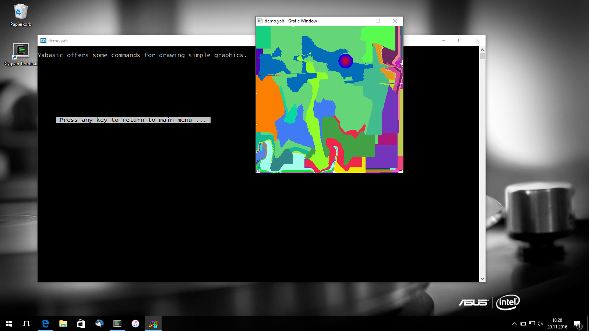
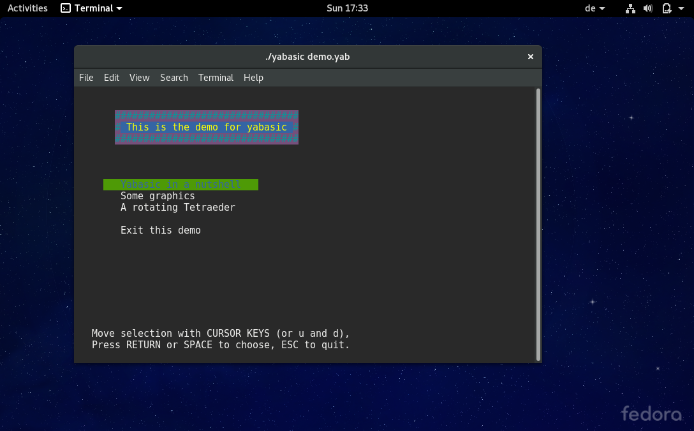
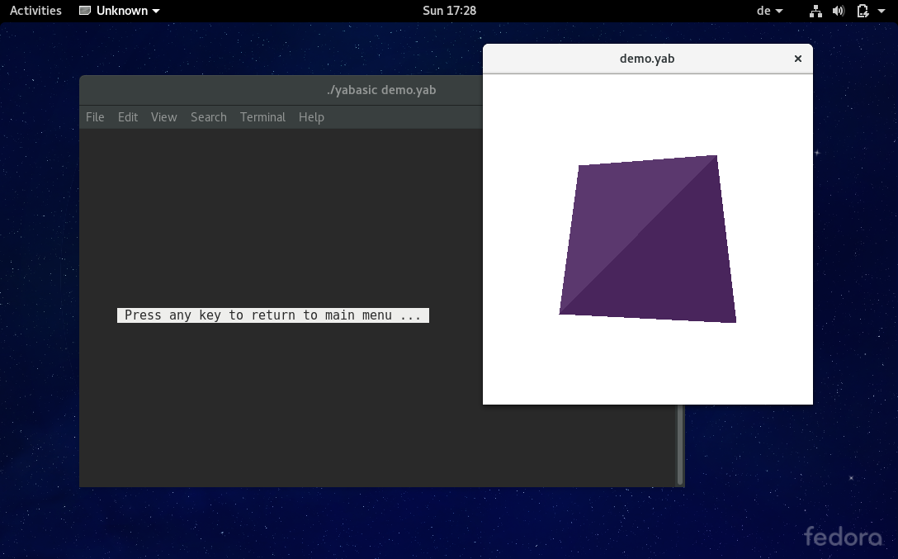

Yabasic runs within the text-console (windows and linux), but may also create a window for drawing simple graphics. This can be seen in the Screenshots below, which are taken from the demo of yabasic.
Screenshots taken under Windows.

Screenshots taken under fedora.

